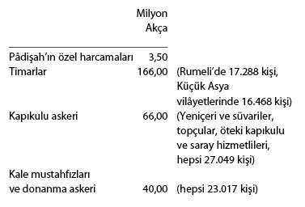

Devlet Gelirleri, Mâliye
1527-28 mâlî yılında timar gelirleri dahil 538 milyon akçayı (yaklaşık 9 milyon Venedik altını) bulan devlet gelirleri başlıca şu yerlere harcanıyordu:80

Görülüyor ki, devlet gelirlerinin yarısı asker maaşlarına (timar ve ulûfe olarak) gitmektedir. Kalan paranın önemli bir kısmı da, yine asker ve saray giderlerine ayrılmakta, bundan kalanı bina, kale inşası ve onarımına, donanma giderlerine, devlet görevlilerinin maaşlarına ve çeşitli bağışlara harcanmaktadır. 1527-28 mâlî yılında gelirden 70 milyon akça artmıştır. Artan para, yedek akça olarak pâdişahın doğrudan kontrolü altındaki iç-hazine’de saklanırdı. İç-hazine bir ihtiyat hazinesi işlevini görür, ihtiyaç halinde oradan dış hazineye kredi verilirdi.
Rumeli’nin (Tuna ve Sava güneyindeki bölgelerle Kırım yarımadası güneyi) bütün geliri 198 milyon akçadır (yaklaşık üç buçuk milyon altın). Bu miktara bütün hâs ve timarlarla vakıf ve mülklerin gelirleri dahildir. Bu miktar, bütün imparatorluk gelirlerinin yaklaşık yüzde 37’sine eşittir. Rumeli gelirinin yüzde 48’i, pâdişah hâsları olarak doğrudan doğruya merkezdeki devlet hazinesine girmekte idi. Yüzde 46’sı timarlara ayrılmıştı. Merkezdeki hazineye, Rumeli’den gelen gelirlerin yüzde 46’sı, merkezî hazine mukata‘alarından (yani başlıca hâs olarak ayrılmış bölgelerdeki çiftliklerden toplanan çeşitli vergilerle şehirlerde alınan ticâret resimlerinden, gümrük ve madenler gelirinden), yüzde 42,3’ü gayrimüslimlere yüklenen cizye vergisinden gelmekte idi.
Rumeli’de gelirin yaklaşık yüzde altısı mülklere ve vakıflara ayrılmıştır. Vakıf giderlerinin büyük kısmı, cami, mescid, medrese, mektep, köprü, han, hamam, çeşme, zâviye, imâret, hastane inşası ve bakımı giderlerine harcanırdı. Böylece, bugün modern devletin yüklendiği bu gibi kamu hizmetleri vakıf yolu ile yerine getirilmiş olurdu. Bu sistem, Rumeli’de Osmanlı şehirlerinin kuruluşunda da başlıca rolü oynamıştır. 1528-1548 mâlî yılı hesapları, bu bölgenin gelirlerinde bu 20 yıl içinde esaslı bir değişiklik olmadığını ortaya koymaktadır. Bununla beraber, tahrîr defterlerinde gördüğümüz ifrâzât, yani yeni bulunan vergi kaynakları, yalnız gizli kalmış gelirin ortaya çıkması ile açıklanamaz. Yeni toprakların tarıma açıldığını kayıtlardan anlamaktayız. 1584 yılına kadar altının 55-60 akça olarak değişmeyen durumu, genellikle ekonomik hayatta da istikrârın ve dengenin simgesi kabul edilebilir.
Maden İşletmeleri
Halkın zaruri ihtiyaç maddelerinden tuzun üretimi ve dağıtımı devlet kontrolü altında geniş bir örgütlemeye yol açmış olup, hazineye bu tekelden önemli gelir sağlanıyordu. 16. yüzyılın ikinci yarısında tuz iltizamlarından devlet hazinesine giren para 6 milyon akça (100.000 altın duka) üzerinde idi.
Altın, gümüş, kurşun, demir ve bakıra gittikçe artan ihtiyaç sonucu klâsik dönemde (1300-1600), Anadolu ve Rumeli’de eski maden işletmeleri genişletilmiş, yeni ocaklar açılmıştır. 14. yüzyılın ikinci yarısında Sidrekapsı (Makedonya), Sırbistan ve Bosna’nın maden bölgeleri, Morava ve Drina vadilerinde Osmanlı fetihlerinin başlıca hedeflerinden biri madenlerdi. Maden ihtiyacı olarak II. Murad kıymetli madenlerin İtalya’ya ihracını yasaklamıştır. Fâtih dönemi (1451-1481) Osmanlı madenciliğinin büyük gelişme dönemidir. Osmanlı maden kanûnları, Sâs kanûnları, eski Saxon kanûnlarından çeviridir. Madenler mukata‘a (iltizam) yöntemiyle işletilirdi. Rum, Sırp, Dubrovnikli ve Yahudi mültezimlerin Osmanlı döneminde de işbaşında olduklarını ve muazzam yatırımlar yaptıklarını görüyoruz. Yukarı-Sırbistan (Vılk) madenleri iltizamı 1468’de 8 milyon akça (200.000 altın) idi. Devlet, bir kısım köylü ve göçer halkı madenci statüsü ile bu madenlerde çalışma zorunluluğu altına koymuştur.
Büyük bakır ve şap madenleri Anadolu’da idi. 1475’te Anadolu’dan elde edilen tüm vergi toplamının yaklaşık yarısı, 150.000 altın duka ile Kastamonu bakır madenlerinden geliyordu. Avrupa tekstil sanayiinin boyamada tespit için kullandığı şap, İtalya’da Tolfa şap madenleri keşfedilinceye kadar Anadolu’dan (Kütahya ve Şapın-Karahisarı) gidiyordu. 15. yüzyılda şap madenleri dost Cenevizlilere iltizama verilirken, 16. yüzyılda Venedikliler eline geçmiştir. 1547’de Venedikliler şap iltizamı için devlet hazinesine 25.000 altın duka ödüyorlardı.
Özetle, klâsik dönemde madencilik ve zaruri ihtiyaç maddeleri trafiği, Bizans’ın güçlü merkeziyetçi idaresinde olduğu gibi, sıkı devlet kontrolü altında idi ve genellikle iltizam usulüyle işletilirdi. Mültezimler, özel sermaye sahipleri olduğundan, ticâret ve başka yollardan elde edilen kapital iltizamlara yatırılırdı. Böylece iltizam, ekonomik etkinliklerin temel motoru idi. Osmanlı toplumunda zengin yerli sınıf bu mültezimlerden oluşuyordu. 1478’de İstanbul gümrüğünü üzerine alan bir Türk–Rum–Yahudi konsorsiyomu bu iltizam için üç yılda hazineye 20 milyon akça (yaklaşık yarım milyon duka altını) ödemeyi üstlenmişti.
80 Bu bütçe için bkz. Ö.L. Barkan “Osmanlı İmparatorluğu Bütçelerine Dair Notlar”, İFM, XV (1953-1954), s. 239-329.